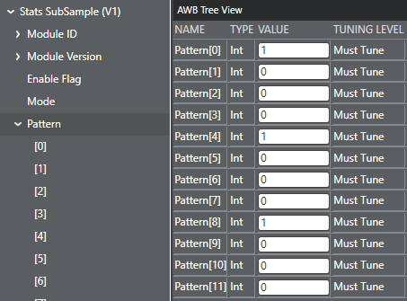

Use this procedure to tune the stats
subsampling mode and mask pattern.
-
Click the AWB tab and then the
Tree View tab.
-
To change the subsampling mode, select and select the appropriate mode value.
-
To update the mask pattern, select
-
Update the twelve pattern indexes to match the preferred mask.
The values are: 1 = used, 0 = discard.

-
Select